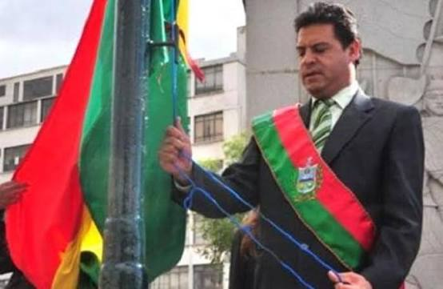

fundacion de La Paz
por: Angel Garcia Ponce
HISTORIA
La ciudad de Nuestra Señora de La Paz fue fundada el 20 de octubre de 1548 por el capitán español Alonso de Mendoza. La fundación ocurrió inicialmente en la localidad de Laja, bajo las órdenes de Pedro de la Gasca, el presidente de la Real Audiencia de Lima. El objetivo principal era celebrar la pacificación del Virreinato del Perú tras las sangrientas guerras civiles entre las facciones de Francisco Pizarro y Diego de Almagro. Pocos días después del acto oficial, el 23 de octubre, los fundadores decidieron trasladar el asentamiento un poco más al este, hacia el valle de Chuquiago Marka (que significa "heredad de oro" en aimara). Este lugar fue elegido porque ofrecía un clima mucho más templado y protector que la altiplanicie de Laja, además de contar con el río Choqueyapu, el cual era rico en oro y proveía agua dulce a la nueva población. A lo largo de la época colonial, La Paz se transformó en un punto estratégico crucial para el comercio. Su ubicación geográfica la conectaba directamente con las minas de plata de Potosí y el puerto de Lima, lo que impulsó un rápido crecimiento económico y demográfico. Con el paso de los siglos, la ciudad pasó de ser un símbolo de paz colonial a convertirse en el epicentro de importantes revoluciones independentistas, consolidando más tarde su rol como la sede de gobierno de Bolivia.
 |
 |
 |
 |